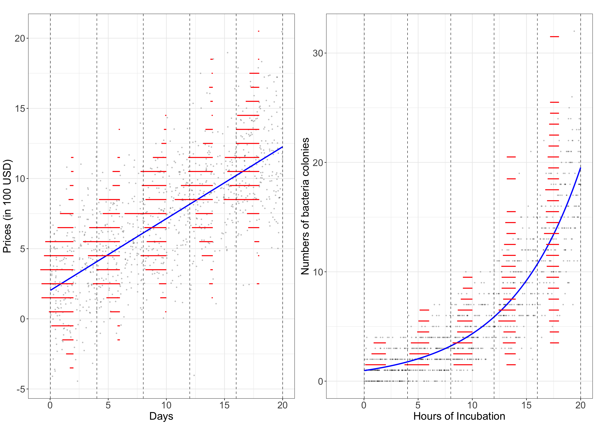
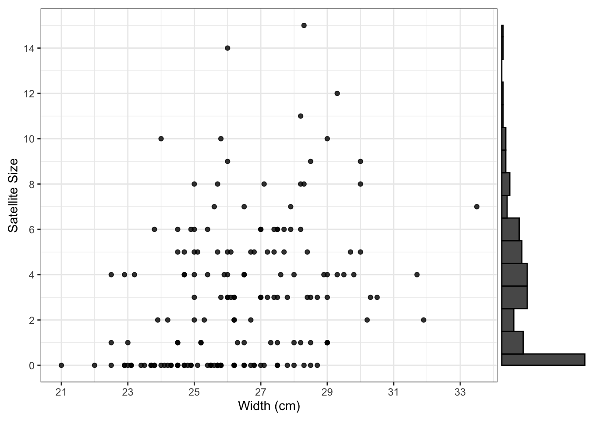
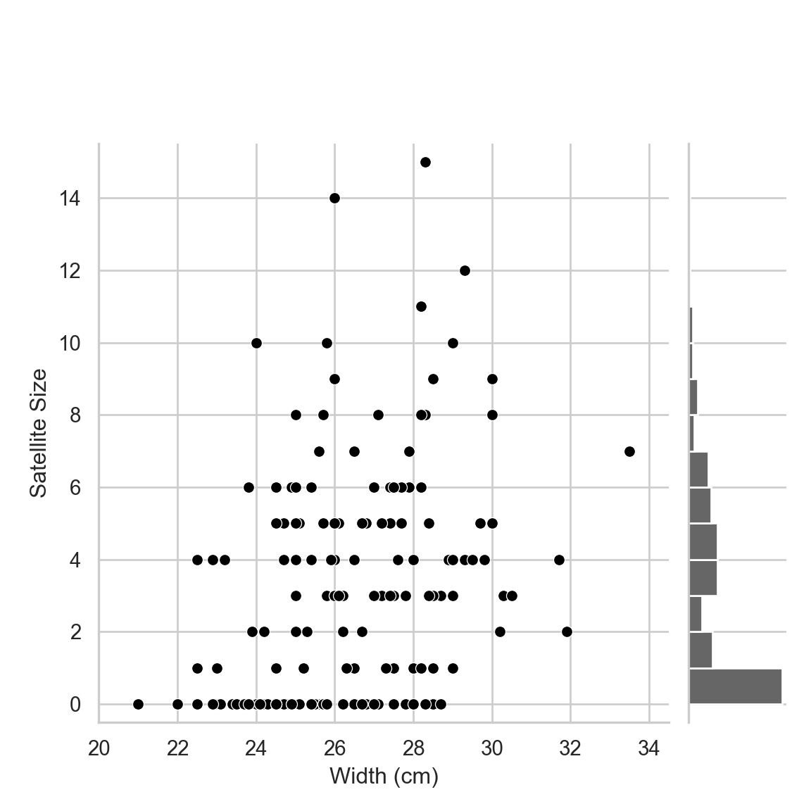
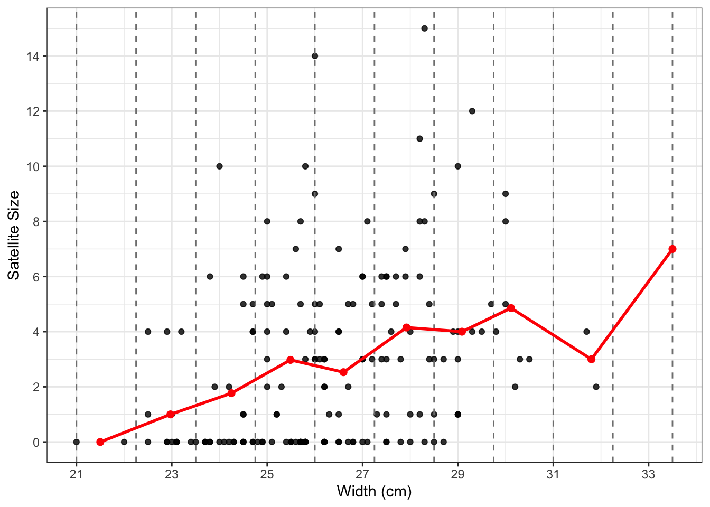
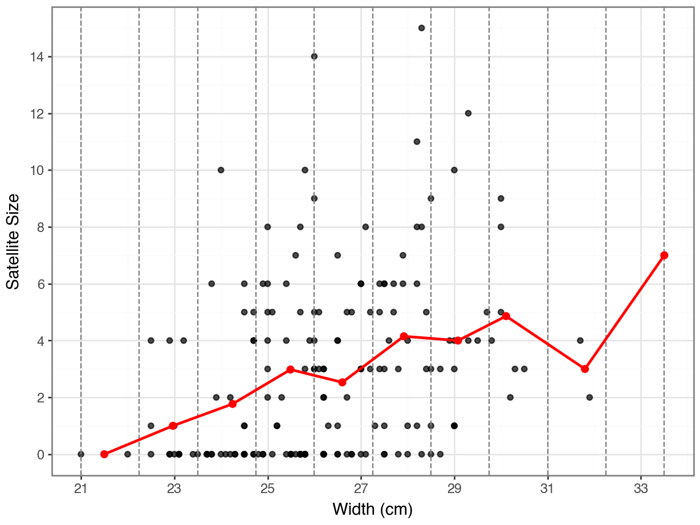
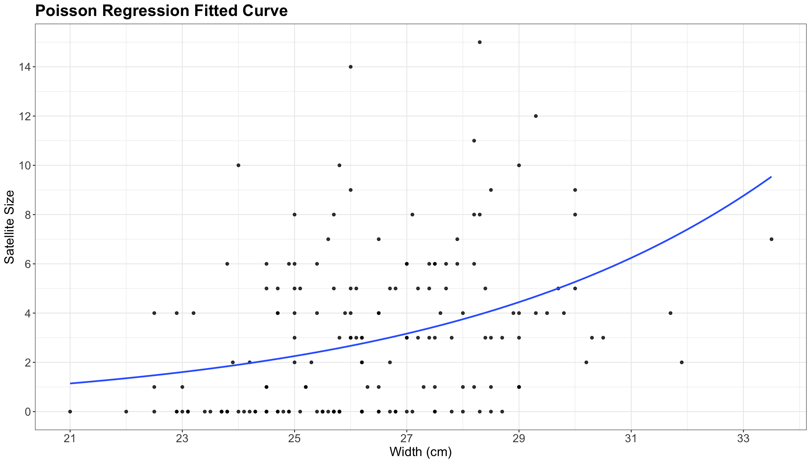
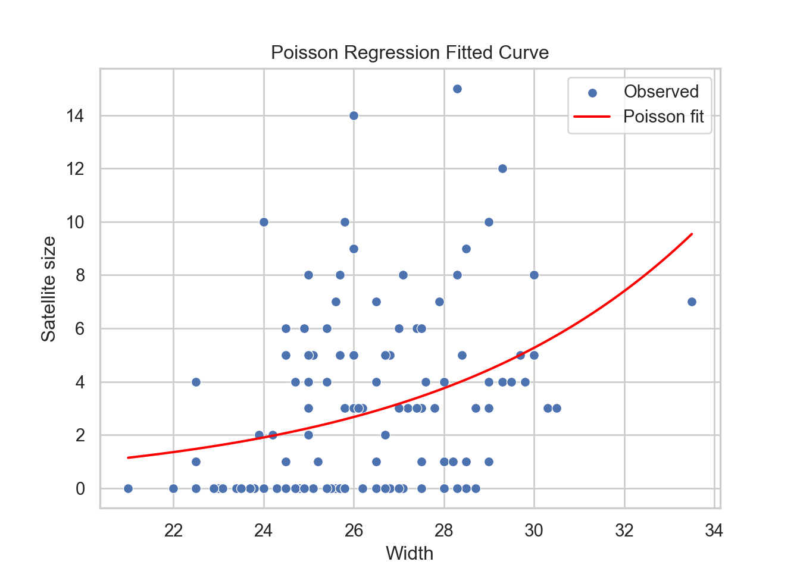

mindmap
root((Regression
Analysis)
Continuous <br/>Outcome Y
{{Unbounded <br/>Outcome Y}}
)Chapter 3: <br/>Ordinary <br/>Least Squares <br/>Regression(
(Normal <br/>Outcome Y)
{{Nonnegative <br/>Outcome Y}}
)Chapter 4: <br/>Gamma Regression(
(Gamma <br/>Outcome Y)
{{Bounded <br/>Outcome Y <br/> between 0 and 1}}
)Chapter 5: Beta <br/>Regression(
(Beta <br/>Outcome Y)
{{Nonnegative <br/>Survival <br/>Time Y}}
)Chapter 6: <br/>Parametric <br/> Survival <br/>Regression(
(Exponential <br/>Outcome Y)
(Weibull <br/>Outcome Y)
(Lognormal <br/>Outcome Y)
)Chapter 7: <br/>Semiparametric <br/>Survival <br/>Regression(
(Cox Proportional <br/>Hazards Model)
(Hazard Function <br/>Outcome Y)
Discrete <br/>Outcome Y
{{Binary <br/>Outcome Y}}
{{Ungrouped <br/>Data}}
)Chapter 8: <br/>Binary Logistic <br/>Regression(
(Bernoulli <br/>Outcome Y)
{{Grouped <br/>Data}}
)Chapter 9: <br/>Binomial Logistic <br/>Regression(
(Binomial <br/>Outcome Y)
{{Count <br/>Outcome Y}}
{{Equidispersed <br/>Data}}
)Chapter 10: <br/>Classical Poisson <br/>Regression(
(Poisson <br/>Outcome Y)
10 Classical Poisson Regression
When to Use and Not Use Classical Poisson Regression
Classical Poisson regression is a type of generalized linear model that is appropriately used under the following conditions:
- The outcome variable is discrete and count-type as shown in Figure 10.1. Examples include number of doctor visits, number of web clicks, number of accidents, etc.
- Outcomes are statistically independent from one to the next.
- The mean and variance of the counts is approximately equal (i.e., there is equidispersion).
- Counts occur over fixed and known exposures (such as time intervals or geographic areas).
- We intend to use the logarithm of the mean of the outcome as a link function, which ensures that our predictions are always positive.
However, Classical Poisson regression should not be used in the following scenarios:
- The outcome is not a count (e.g., binary outcomes, proportions, or continuous variables).
- The data shows overdispersion (i.e., the variance exceeds the mean). In this case, check Negative Binomial or Generalized Poisson regressions.
- The data shows underdispersion (i.e., the variance is less than the mean), which Poisson regression cannot accommodate. Alternatively, check Generalized Poisson regression.
- The outcome variable includes a large number of zeros. Instead, check Zero-Inflated Poisson regression.
Learning Objectives
By the end of this chapter, you will be able to:
- Describe the reason that ordinary linear models is inappropriate to use.
- Determine when Poisson regression is an appropriate modeling choice.
- Write down the likelihood function of a Poisson regression models.
- Understand the computation procedure of the Poisson regression coefficient estimation.
- Interpret the Poisson regression coefficients in the real scenarios.
- Evaluate model performance and construct confidence intervals.
10.1 Introduction
This chapter introduces a generalized linear regression model that can be applied on Poisson-distributed count data. Compared to ordinary regression, which assume normality and constant variance—homoskedasticity, Poisson regression models count data that is skewed and heteroskedastic.
Some research questions you might explore using Poisson regression:
- How is the number of insurance claims filed by policyholders in a year associated with ages, vehicle types, and regions?
- How can the number of complaints received by a telecom company from customers be explained by service types and contract lengths?
- How does the distribution of counts of satellite male horseshoe crabs residing around a female horseshoe crab nest vary by the phenotypic characteristics of the female horseshoe crabs?
10.1.1 Poisson Regression Assumptions
Independence: Poisson regression assumes the responses to be counts–(nonnegative integers: 0, 1, 2,…). Each response is mutually independent to each other with mean parameter \(\lambda_i,i=1,\dots,n\).
Log-linearity: Poisson regression models the log-link function of the response as a linear combination of the explanatory variables, i.e., \(\log(\lambda_i) = \beta_0 + \beta_1 X_{i1}+\dots+\beta_p X_{ip}\) with \(\lambda_i> 0\) for all \(i=1,\dots,n\).
Heteroskedasticity: Poisson regression assumes heteoroskedastic response, i.e., the variance of the response increases along with the mean increasing; in contrast to the ordinary regression with Gaussian noise, whose the variance is constant and independent to the mean. Poisson regression assumes equidispersion, i.e., the variance is the same as the expectation of the response; compared to overdispersion in negative binomial distribution where the variance is greater than the mean.
10.1.2 A Graphical Look
Below is a graphical demonstration of the comparison between the ordinary linear regression with Gaussian distributed response and Poisson regression with Poisson distributed response. The left panel illustrates the price of smartphones (in 100 USD) increase with the number of days listed on an online marketplace. The right panel illustrates the number of bacteria colonies on a petri dish versus the hours of incubation.
The ordinary linear regression has a linear fitted blue line (in the left panel), while the Poisson regression, due to the use of log-link function, has a fitted blue curve (in the right panel). Segment the explanatory variable (in the x axis) in each scenario into five sections using the gray dashed vertical lines. The red horizontal segments represent the frequencies of binned response in each section, which represents the rotated histogram of the response. In ordinary linear regression, the response in each section is symmetrically distributed with similar variation across five sections (i.e., homoskedasticity); while in Poisson regression, the response is skewed with heteroskedasticity (specifically, increasing variances as the responses increase) across sections.

10.2 Case Study: Horseshoe Crab Satellites
Let’s take a closer look at the example in the third question mentioned in the Introduction—exploring the differential distribution of the number of satellite male horseshoe crabs residing around a female horseshoe crab nest across various phenotypic characteristics. Using the dataset crabs provided by Brockmann, 1996, let’s load the dataset and do some data wrangling.
10.3 Data Collection and Wrangling
There are 173 records of the female horseshoe crab nests and their male satellites with 5 features: satell: satellite size of each nest (i.e., the number of male horseshoe crabs around each female horseshoe crab nest), width: shell width in cm, color: 1 = medium light, 2 = medium, 3 = medium dark, 4 = dark, spine: spine condition: 1 = both good, 2 = one broken, 3 = both broken, and weight: weight in kg (referring to Section 3.3.3 in Agresti, 2018).
# A tibble: 173 × 5
satell width color spine weight
<int> <dbl> <fct> <fct> <dbl>
1 8 28.3 2 3 3.05
2 0 22.5 3 3 1.55
3 9 26 1 1 2.3
4 0 24.8 3 3 2.1
5 4 26 3 3 2.6
6 0 23.8 2 3 2.1
7 0 26.5 1 1 2.35
8 0 24.7 3 2 1.9
9 0 23.7 2 1 1.95
10 0 25.6 3 3 2.15
# ℹ 163 more rowssatell int64
width float64
color category
spine category
weight float64
dtype: object satell width color spine weight
0 8 28.3 2 3 3.050
1 0 22.5 3 3 1.550
2 9 26.0 1 1 2.300
3 0 24.8 3 3 2.100
4 4 26.0 3 3 2.600
.. ... ... ... ... ...
168 3 26.1 3 3 2.750
169 4 29.0 3 3 3.275
170 0 28.0 1 1 2.625
171 0 27.0 4 3 2.625
172 0 24.5 2 2 2.000
[173 rows x 5 columns]Let’s now split the data into training and test sets.
# Use 70% data for training and 30% for testing
par <- 0.7
# Set seed for reproducible splitting
set.seed(1046)
n <- nrow(crabs)
train_indices <- sample(seq_len(n), size = floor(par * n))
# Create training and test sets
train_set <- crabs[train_indices, ]
test_set <- crabs[-train_indices, ]
# Print the number of training and test samples
cat("Number of training samples:", nrow(train_set), "\n")
cat("Number of test samples:", nrow(test_set), "\n")# Use 70% data for training and 30% for testing
par = 0.7
# Set seed for reproducible splitting
np.random.seed(1046)
n = len(crabs)
train_indices = np.random.choice(n, size=int(par * n), replace=False)
# Create training and test sets
train_set = crabs.iloc[train_indices]
test_set = crabs.drop(index=train_indices)
# Print the number of training and test samples
print(f"Number of training samples: {len(train_set)}")
print(f"Number of test samples: {len(test_set)}")Number of training samples: 122 Number of test samples: 51 Number of training samples: 122Number of test samples: 5110.4 Exploratory Data Analysis
Suppose that the relationship between the satellite size per nest (satell) and width of the female horseshoe crab (width in cm) is our main research interest. Let’s explore their relationship in the following scatterplot with the distribution of satell on the margin.
# draw the scatterplot of satellite size versus width
p <- crabs %>%
ggplot(aes(y = satell, x = width)) +
geom_point(alpha = 0.8) +
labs(x = "Width (cm)", y = "Satellite Size") +
scale_x_continuous(breaks = seq(floor(min(crabs$width)), ceiling(max(crabs$width)), by = 2)) +
scale_y_continuous(breaks = scales::pretty_breaks(n = 10)) +
theme_bw()
# add a marginal histogram with binwidth of 1, i.e., bins for integers; equivalent to the barplot
ggMarginal(p, type = "histogram", margins = "y", binwidth = 1, boundary = -0.5) # start with `satell=-0.5` to avoid the first bins (0s and 1s) being combined in one binimport seaborn as sns
sns.set(style = "whitegrid")
# create bins of width 1 for the marginal histogram
bin_edges = np.arange(crabs['satell'].min(), crabs['satell'].max() + 2, 1) # bins of width 1
# draw the scatterplot of satellite size versus width with marginal distributions
g = sns.jointplot(
data = crabs,
x = "width",
y = "satell",
color = "black",
kind = "scatter",
marginal_ticks = False,
marginal_kws = dict(bins = bin_edges, fill = True, color="black", alpha=0.6)
)
g.ax_marg_x.remove() # remove the marginal histogram on x axis
# add labels
g.ax_joint.set_xlabel("Width (cm)")
g.ax_joint.set_ylabel("Satellite Size")
# add axes' limits
ymin, ymax = crabs['satell'].min(), crabs['satell'].max()
xmin, xmax = crabs['width'].min(), crabs['width'].max()
g.ax_joint.set_xlim(xmin - 1, xmax + 1);
g.ax_joint.set_ylim(ymin - 0.5, ymax + 0.5);
g.ax_marg_y.set_ylim(ymin - 0.5, ymax + 0.5);

The distribution of satellite sizes is highly right skewed, which violates the normality assumption of the ordinary linear regression.
In the scatter plot above, we can tell that the satellite size gets more spread out as the width increases. The averaged satellite sizes turn to increase along the width increasing. Let’s now split the width into a few intervals and compute the representative point for each interval to have a clear look at the trend.
# set up the number of intervals
n_intervals <- 10
# compute the average points for each interval of `width`
crabs_binned <- crabs %>%
mutate(width_inl = cut(width, breaks = n_intervals)) %>%
group_by(width_inl) %>%
summarize(
mean_width = mean(width),
mean_satell = mean(satell),
.groups = "drop"
)
crabs_binned# set up the number of intervals
n_intervals = 10
# compute the average points for each interval of `width`
crabs['width_inl'] = pd.cut(crabs['width'], bins=n_intervals)
crabs_binned = (
crabs
.groupby('width_inl', observed=True)
.agg(mean_width=('width', 'mean'), mean_satell=('satell', 'mean'))
.reset_index()
.round(2)
)
crabs_binned# A tibble: 10 × 3
width_inl mean_width mean_satell
<fct> <dbl> <dbl>
1 (21,22.2] 21.5 0
2 (22.2,23.5] 23.0 1
3 (23.5,24.8] 24.2 1.77
4 (24.8,26] 25.5 2.98
5 (26,27.2] 26.6 2.53
6 (27.2,28.5] 27.9 4.15
7 (28.5,29.8] 29.1 4
8 (29.8,31] 30.1 4.86
9 (31,32.2] 31.8 3
10 (32.2,33.5] 33.5 7 width_inl mean_width mean_satell
0 (20.988, 22.25] 21.50 0.00
1 (22.25, 23.5] 22.97 1.00
2 (23.5, 24.75] 24.25 1.77
3 (24.75, 26.0] 25.49 2.98
4 (26.0, 27.25] 26.60 2.53
5 (27.25, 28.5] 27.92 4.15
6 (28.5, 29.75] 29.08 4.00
7 (29.75, 31.0] 30.11 4.86
8 (31.0, 32.25] 31.80 3.00
9 (32.25, 33.5] 33.50 7.00We’ve prepared the summarized dataset for the average points—each entry includes an interval of width, an averaged width, and an averaged satellite size per interval. Now, let’s visualize the representative points on the scatter plot to take a closer look at the trend.
# add the average points onto the scatterplot, connect them, and mark intervals
breaks <- seq(min(crabs$width), max(crabs$width), length.out = n_intervals + 1)
p +
geom_vline(xintercept = breaks, linetype = "dashed", color = "gray50") +
geom_point(data = crabs_binned, aes(x = mean_width, y = mean_satell), color = "red", size = 2) +
geom_line(data = crabs_binned, aes(x = mean_width, y = mean_satell), color = "red", linewidth = 1)# draw the scatterplot of satellite size versus width
p = (
ggplot(crabs, aes(x='width', y='satell')) +
geom_point(alpha=0.7, color='black') + # points in gray
labs(x="Width (cm)", y="Satellite Size") +
scale_x_continuous(breaks=range(int(np.floor(crabs['width'].min())), int(np.ceil(crabs['width'].max())) + 1, 2)) +
scale_y_continuous(breaks=range(int(np.floor(crabs['satell'].min())), int(np.ceil(crabs['satell'].max())) + 1, 2)) +
theme_bw()
)
# add the average points onto the scatterplot, connect them, and mark intervals
breaks = np.linspace(crabs['width'].min(), crabs['width'].max(), n_intervals + 1)
p_final = (
p +
geom_vline(xintercept=breaks, linetype='dashed', color='gray') +
geom_point(data=crabs_binned, mapping=aes(x='mean_width', y='mean_satell'), color='red', size=2) +
geom_line(data=crabs_binned, mapping=aes(x='mean_width', y='mean_satell'), color='red', size=1)
)
p_final.show()

We can see a general increasing trend of the satellite size as the nest width grows.
10.5 Data Modelling
The Poisson regression model assumes a random sample of \(n\) count observations \(Y_i\)s, hence independent (but not identically distributed!), which have the following distribution: \[Y_i \sim \mathrm{Poisson}(\lambda_i).\] Each \(i\)th observation has its own \(\mathbb{E}(Y_i)=\lambda_i>0\), which also implicates \(Var(Y_i)=\lambda_i>0\).
Parameter \(\lambda_i\) is the risk of an event occurrence, coming from the definition of the Poisson random variable, in a given timeframe or even a space. It is a continuous distributional parameter! For the crabs dataset, the events are the number of satellite male horseshoe crabs around a space: the female breeding nest.
Since the Poisson Regression model is also a GLM, we need to set up a link function for the mean. Let \(X_{i,\text{width}}\) be the \(i\)th value for the regressor width in our dataset. An easy modelling solution would be an identity link function as in \[
h(\lambda_i)=\lambda_i=\beta_0+\beta_1 X_{i,\text{width}}. \label{eq:pois-uni-iden}
\]
However, we have a response range issue!
The model (eq:pois-uni-iden?) for has a significant drawback: the right-hand side is allowed to take on even negative values, which does not align with the nature of the parameter \(\lambda_i\) (that always has to be non-negative).
Recall the essential characteristic of a GLM that should come into play for a link function. In this class of models, the direct relationship between the original response and the regressors may be non-linear as in \(h(\lambda_i)\). Hence, instead of using the identity link function, we will use the natural logarithm of the mean: \(\log(\lambda_i)\).
Before continuing with the crabs dataset, let us generalize the Poisson regression model with \(k\) regressors as: \[ h(\lambda_i) = \log(\lambda_i)=\beta_0+\beta_1 X_{i,1}+\dots+\beta_k X_{i,k}. \label{eq:pois-k} \] We could make more sense in the interpretation by exponentiating (eq:pois-k?): \[ \lambda_i = \exp(\beta_0+\beta_1 X_{i,1}+\dots+\beta_k X_{i,k}), \label{eq:pois-k-exp} \] where an increase in one unit in any of the \(k\) regressors (while keeping the rest of them constant) multiplies the mean \(\lambda_i\) by a factor \(\exp(\beta_j)\), for all \(j=i,\dots,k\).
In the crabs dataset with width as a regressor, the Poisson regression model is depicted as: \[
\log(\lambda_i)=\lambda_i=\beta_0+\beta_1 X_{i,\text{width}}. \label{eq:pois-uni}
\]
10.6 Estimation
In generalized linear models (GLMs), parameter estimation is typically performed using maximum likelihood estimation (MLE). A widely used algorithm to compute the MLE in GLMs is the iteratively reweighted least squares (IRLS) method, which learns the regression coefficients by solving the weighted least squares problems through iteration. Below we learn the essential elements of the IRLS method and the MLE that it solves. We use Poisson regression as an example, but the procedure applies to other distributions straightforwardly.
The general idea to solve the generalized linear regression is to estimate the parameters by maximizing the likelihood. For Poisson regression in (eq:pois-k?) specifically, it is written as: \[ \prod_{i=1}^n p_{Y_i}(y_i) = \prod_{i=1}^n \frac{e^{-\lambda_i}{\lambda_i}^{y_i}}{y_i!}, \] where \(p_{Y_i}(y_i)\) is the probability mass function of \(Y_i\), for \(i=1,\dots,n\).
Let \(\boldsymbol{\beta}:=(\beta_0,\dots,\beta_k)^{\top}\) be the coefficient vector, and then (eq:pois-k-exp?) can be rewritten as \(\lambda_i=\exp(X_{i}^{\top}\boldsymbol{\beta})\), where \(X_{i}^{\top}\) is the row \(i\) in the design matrix \(X\). Maximizing the likelihood is equivalent to minimizing the log-likelihood in terms of solving for the parameters \(\beta_j,j=1,\dots,k\): \[ {\arg\min}_{\boldsymbol{\lambda}} - \prod_{i=1}^n\frac{e^{-\lambda_i}{\lambda_i}^{y_i}}{y_i!} = {\arg\min}_{\boldsymbol{\lambda}} \sum_{i=1}^n \lambda_i - y_i \log(\lambda_i). \] Plugging in \(\lambda_i=\exp(X_{i}^{\top}\boldsymbol{\beta})\) gives the minimization problem with respect to the Poisson regression coefficients: \[ {\arg\min}_{\boldsymbol{\beta}} \sum_{i=1}^n \exp(X_{i}^{\top}\boldsymbol{\beta}) - y_i X_{i}^{\top}\boldsymbol{\beta}. \label{eq:pois-log} \]
Since the objective in (eq:pois-log?) is not quadratic and there is no closed form solution, we could not solve the equation exactly. IRLS solves an approximated solution with a specified accuracy or tolerance. The basic idea is that IRLS uses Fisher scoring (or Newton-Raphson) to solve an approximated problem of the original objective (eq:pois-log?) and solve it iteratively with weights updated through iteration until the specified accuracy is achieved, i.e., the objective is converged.
The MLE \(\hat{\boldsymbol{\beta}}\) satisfies the score function \(U(\boldsymbol{\beta}) = \nabla_{\boldsymbol{\beta}} \ell(\boldsymbol{\beta}) = 0\). Applying the Fisher scoring update gives: \[ \boldsymbol{\beta}^{t+1} \leftarrow \boldsymbol{\beta}^{t} + {\mathcal{I}(\boldsymbol{\beta}^t)}^{-1} U(\boldsymbol{\beta}^{t}), \] where \(\mathcal{I}(\boldsymbol{\beta}^t) := \mathbb{E}\big[- \nabla^2_{\boldsymbol{\beta}} \ell(\boldsymbol{\beta}^t)\big]\) is the Fisher information, which is the expectation of the negative second-order derivative of the log-likelihood with respect to the parameters.
The Fisher scoring update corresponds to solve the following approximated problem of the original objective at iterate \(t+1\), which is a weighted least squares problem written as: \[
\begin{align}
\boldsymbol{\beta}^{t+1} &= {\arg\min}_{\boldsymbol{\beta}} \sum_{i=1}^n w_i^t (y_i^t - X_i^{\top}\boldsymbol{\beta})^2 \\
&= {\arg\min}_{\boldsymbol{\beta}} \sum_{i=1}^n w_i^t (y_i^t - \beta_0 - \beta_1 x_{i,\text{width}})^2 \label{eq:irls-approx}
\end{align}
\] given the estimates at time \(t\) for the univariate case using crabs dataset. The approximated problem has a closed-form solution and is much easier to solve than the original objective. The observations \(y_i\) and weights \(w_i\) should be updated per iterate. The arbitrary observations \(y_i^{t+1}\) is a function of the original observations \(y_i^0\) and the coefficient estimates. The weights is updated by \[w_i^{t+1} = \Big(\frac{1}{Var(Y_i)}\Big)\Big(\frac{1}{g'(\lambda_i)}\Big)^2,\] where \(\lambda_i\) is the mean of the response \(y_i\), \(\eta_i=g(\lambda_i)\) is the link function of the mean. In our case, the weights at iterate \(t+1\) can be updated given the coefficient estimates at \(t\) using the following formula: \[
w_i^{t+1} = \exp(X_i^{\top} \boldsymbol{\beta}^t), \forall i=1,\dots,n.
\]
The IRLS iteration procedure is as follows.
- Choose a set of initial coefficients \(\boldsymbol{\lambda}^0 = (\lambda_0^0,\dots,\lambda_k^0)\), which can be a vector of zeros.
- Compute the weights based on the estimates from the previous iterate, or the inital coefficients at the first iterate.
- Solve the approximated problem (irls-approx?).
- Check te convergence condition.
- Return estimates if the objective is converged; go back to step 2 if not.
Let’s now fit the model on the training data.
# Fit Poisson regression
poisson_model = glm(formula='satell ~ width', data=train_data, family=sm.families.Poisson(link=sm.families.links.log())).fit()
# View summary
print(poisson_model.summary())
Call:
glm(formula = satell ~ width, family = poisson(link = "log"),
data = train_set)
Coefficients:
Estimate Std. Error z value Pr(>|z|)
(Intercept) -3.43023 0.64716 -5.300 1.16e-07 ***
width 0.16973 0.02386 7.112 1.14e-12 ***
---
Signif. codes: 0 '***' 0.001 '**' 0.01 '*' 0.05 '.' 0.1 ' ' 1
(Dispersion parameter for poisson family taken to be 1)
Null deviance: 476.83 on 121 degrees of freedom
Residual deviance: 428.20 on 120 degrees of freedom
AIC: 679.01
Number of Fisher Scoring iterations: 6 Generalized Linear Model Regression Results
==============================================================================
Dep. Variable: satell No. Observations: 122
Model: GLM Df Residuals: 120
Model Family: Poisson Df Model: 1
Link Function: log Scale: 1.0000
Method: IRLS Log-Likelihood: -337.50
Date: Mon, 20 Oct 2025 Deviance: 428.20
Time: 22:00:54 Pearson chi2: 418.
No. Iterations: 5 Pseudo R-squ. (CS): 0.3287
Covariance Type: nonrobust
==============================================================================
coef std err z P>|z| [0.025 0.975]
------------------------------------------------------------------------------
Intercept -3.4302 0.647 -5.300 0.000 -4.699 -2.162
width 0.1697 0.024 7.112 0.000 0.123 0.216
==============================================================================10.7 Goodness of Fit
In GLMs, we can use residual deviance and Chi-squared test to check the goodness of fit of the model. The residual deviance measures how well the fitted model explains the observed outcomes, compared to a perfect model (the saturated model) that explains the data exactly. A smaller residual deviance means a better fit of the data. It is computed as \[\text{Residual Deviance } = 2 (\ell_{\mathrm{saturated}} - \ell_{\mathrm{fitted}}),\] where \(\ell_A\) is the log-likelihood of model \(A\). For Poisson regression specifically, the residual deviance is \(2\sum_{i=1}^n \Big[y_i\log\big(\frac{y_i}{\hat{\lambda}_i}\big) - (y_i-\hat{\lambda}_i)\Big]\).
When the model is a good fit, the residual deviance is expected to follow a chi-squared distribution with degrees of freedom \(df = n - p\), where \(n\) is the number of observations and \(p\) is the number of parameters, asymptotically for a large enough sample size. We then can compute the \(p\)-value using the chi-squared distribution: \[ p\text{-value} = 1-P(\chi^2_{\mathrm{df}} \leq \text{residual deviance}). \]
\(p\)-value is the probability of observing a residual deviance as large as (or larger than) what we got, if the model is truly correct. A large p-value (e.g., > 0.05) means that the observed deviance is not surprisingly large. Out model is a good fit and could plausibly have generated the data. A small p-value (e.g., < 0.05) means that the deviance is too large to be due to chance. The model is a poor fit and likely missing something important.
# Residual deviance and degrees of freedom
res_dev <- deviance(poisson_model)
df_res <- df.residual(poisson_model)
# Chi-squared goodness-of-fit test
p_value <- 1 - pchisq(res_dev, df_res)
cat("Residual Deviance:", round(res_dev, 4), "\n")
cat("Degrees of Freedom:", df_res, "\n")
cat("Goodness-of-fit p-value:", round(p_value, 4), "\n")res_dev = poisson_model.deviance
df_res = poisson_model.df_resid
p_value = 1 - stats.chi2.cdf(res_dev, df_res)
print(f"Residual Deviance: {res_dev:.4f}")
print(f"Degrees of Freedom: {df_res}")
print(f"Goodness-of-fit p-value: {p_value:.4f}")Residual Deviance: 428.2018 Degrees of Freedom: 120 Goodness-of-fit p-value: 0 Residual Deviance: 428.2018Degrees of Freedom: 120Goodness-of-fit p-value: 0.0000The probability of observing a deviance as large as this if the model is truly correct (i.e., the goodness-of-fit \(p\)-value) is esentially 0, saying that there is significant evidence of lack-of-fit. There can be several reasons for lack-of-fit. The model is misspecified, e.g., it is missing important covariates or nonlinear effects. The link function might be incorrect, so that the model is systematically overestimate or underestimate the data. There can be outliers or influential points that inflate the deviance. The data might be overdispersed, so that the residual deviance is inflated by the large variance.
10.8 Inference
The estimated model can be used for two purposes: inference and prediction. In terms of inference, we use the fitted model to identify the relationship between the response and regressors. Wald’s test is a general method for hypothesis testing in maximum likelihood estimation (MLE), including generalized linear models (GLMs) like Poisson regression. It tests the hypotheses of the form: \[ \begin{align} H_0 &: \beta_j = 0, \\ H_a &: \beta_j \neq 0. \end{align} \] using the fact that \(\frac{\hat{\beta}_j}{SE(\hat{\beta}_j)} \sim \mathcal{N}(0,1)\) asymptotically under \(H_0\), where \(\beta_j\) is the \(j\)th estimated regression coefficient and \(SE(\hat{\beta}_j)\) is its corresponding variability which is reflected in the standard error of the estimate. This ratio is the Wald’s test statistic \[z_j = \frac{\hat{\beta}_j}{SE(\hat{\beta}_j)}\] that is used to determine the statistical significance of \(\hat{\beta}_j\) using the fact that the squared statistic asymptotically follows a one-degree-of-freedom chi-squared test, i.e., \[W_j = \Big(\frac{\hat{\beta}_j}{SE(\hat{\beta}_j)}\Big)^2\sim \chi_1^2.\]
Remark 1: A statistic like \(t_j=\frac{\hat{\beta}_j}{SE(\hat{\beta}_j)}\) in t test is referred to as a \(t\)-value. It assumes finite-sample normality—a student’s \(t\)-distribution under the null hypothesis with \(H_0\) with \(n-k-1\) degrees of freedom. It can only be used for linear models with normal errors. While the Wald’s test applies to any MLE (e.g., Poisson or logistic) to be used in any GLMs, and assumes asymptotic normality—standard normal or \(\chi^2\) distribution under \(H_0\).
Remark 2: Wald’s test is validate under several conditions: 1-large sample size, so that the test statistic is asymptotically normal, 2-regularity conditions for MLE, including differentiable likelihood, positive definite Fisher information, correctly specified model and parameter space, 3-well-estimated parameters, i.e., parameters are not near the bounaries, 4-stable and finite standard errors, and 5-no outliers or high leverage points.
We can obtain the corresponding \(p\)-values for each \(\beta_j\) associated to the Wald’s test statistic under the null hypothesis \(H_0\). The smaller the \(p\)-value, the stronger the evidence against the null hypothesis \(H_0\) in our sample. Hence, small \(p\)-values (less than the significance level \(\alpha\)) indicate that the data provides evidence in favour of association (or causation if that is the case) between the response variable and the \(j\)th regressor.
Similarly, given a specified \((1-\alpha)\times 100%\) level of confidence, we can construct confidence intervals for the corresponding true value of \(\beta_j\): \[\hat{\beta}_j \pm t_{\alpha/2,n-k-1} SE(\hat{\beta}_j),\] where \(t_{\alpha/2,n-k-1}\) is the upper \(\alpha/2\) quantile of the \(t\)-distribution with \(n-k-1\) degrees of freedom.
Let’s now compute the 95% confidence interval.
tidy(poisson_model, conf.int = TRUE) %>% mutate_if(is.numeric, round, 3)# Get coefficient table
summary_df = poisson_model.summary2().tables[1]
# Compute confidence intervals
conf_int = poisson_model.conf_int()
conf_int.columns = ['conf_low', 'conf_high']
# Combine with coefficient table
summary_df = summary_df.join(conf_int)
# Round all numeric columns to 3 decimals
summary_df = summary_df.round(3)
print(summary_df)# A tibble: 2 × 7
term estimate std.error statistic p.value conf.low conf.high
<chr> <dbl> <dbl> <dbl> <dbl> <dbl> <dbl>
1 (Intercept) -3.43 0.647 -5.3 0 -4.70 -2.16
2 width 0.17 0.024 7.11 0 0.123 0.216 Coef. Std.Err. z P>|z| [0.025 0.975] conf_low conf_high
Intercept -3.43 0.647 -5.300 0.0 -4.699 -2.162 -4.699 -2.162
width 0.17 0.024 7.112 0.0 0.123 0.216 0.123 0.216Our sample gives us evidence to reject \(H_0\) (with a nearly-zero \(p\) value), which suggests that carapace width is statistically associated to the logarithm of the satellite size. Now, it is time to plot the fitted values coming from poisson_model to check whether it provides a positive relationship between width and the original scale of the response satell.
p +
geom_smooth(
data = train_set, aes(width, satell),
method = "glm", formula = y ~ x,
method.args = list(family = poisson), se = FALSE
) +
labs(title="Poisson Regression Fitted Curve")# Compute the fitted values
width_range = np.linspace(train_set['width'].min(), train_set['width'].max(), 100)
predict_df = pd.DataFrame({'width': width_range})
predict_df['predicted'] = poisson_model.predict(predict_df)
# Draw the scatterplot
sns.scatterplot(data=train_set, x='width', y='satell', label='Observed')
# Add the Poisson regression line
sns.lineplot(data=predict_df, x='width', y='predicted', color='red', label='Poisson fit')
# Add title
plt.title('Poisson Regression Fitted Curve')
plt.xlabel('Width')
plt.ylabel('Satellite size')
plt.legend()
plt.show()

The blue line in the plot above is the fitted Poisson regression of satell versus width. The positive relationship is now clear with this regression line.
10.9 Results
Let us fit a second model with two regressors: width (\(X_{\mathrm{width}_i}\)) and color (\(X_{\mathrm{color_2}_i}\), \(X_{\mathrm{color_3}_i}\), \(X_{\mathrm{color_4}_i}\)) for the \(i\)th observation: \[
h(\lambda_i) = \log(\lambda_i) = \beta_0 + \beta_1 X_{\mathrm{width}_i} + \beta_2 X_{\mathrm{color_2}_i} + \beta_3 X_{\mathrm{color_3}_i} + \beta_4 X_{\mathrm{color_4}_i}.
\] The explanatory variable color is of factor-type (discrete) and nominal (its levels do not follow any specific order). There are four levels: 1 = medium light, 2 = medium, 3 = medium dark, 4 = dark.
[1] "1" "2" "3" "4"Index([1, 2, 3, 4], dtype='int64')Using categorical variables such as color involves using dummy variables as in Binary Logistic regression. Taking the baseline 1 = medium light by default, this Poisson regression model will incorporate three dummy variables: \(X_{\mathrm{color_2}_i}\), \(X_{\mathrm{color_3}_i}\), and \(X_{\mathrm{color_4}_i}\). For different levels of color, these dummy variables take on the following values:
- When
coloris1 = medium light, then all three dummy variables \(X_{\mathrm{color_2}_i} = X_{\mathrm{color_3}_i} = X_{\mathrm{color_4}_i}=0\). - When
coloris2 = medium, then \(X_{\mathrm{color_2}_i}=1\) while the other two dummy variables \(X_{\mathrm{color_3}_i} = X_{\mathrm{color_4}_i}=0\). - When
coloris3 = medium dark, then \(X_{\mathrm{color_3}_i}=1\) while the other two dummy variables \(X_{\mathrm{color_2}_i} = X_{\mathrm{color_4}_i}=0\). - When
coloris4 = dark, then \(X_{\mathrm{color_4}_i}=1\) while the other two dummy variables \(X_{\mathrm{color_2}_i} = X_{\mathrm{color_3}_i}=0\).
Note that the level 1 = medium light is depicted as the baseline here. Hence, the interpretation of the coefficients in the model for each dummy variable will be compared to this baseline.
Now, let us fit this second Poisson regression model and print the model summary including coefficient estimates, standard errors, Wald’s test statistic (\(z\)-test), the corresponding \(p\)-value, and 95% confidence intervals.
# Fit the Poisson model
poisson_model2 <- glm(satell ~ width + color, family = poisson, data = train_set)
# Summarise the model output
summary_df <- tidy(poisson_model2, conf.int = TRUE) %>% mutate_if(is.numeric, round, 3)
# Display the output in table
kable(summary_df, "pipe")# Fit the Poisson regression model
poisson_model2 = glm(formula='satell ~ width + color', data=train_set, family=sm.families.Poisson()).fit()
# Extract the summary table
summary_df = poisson_model2.summary2().tables[1]
# Display the table
print(summary_df.round(3))| term | estimate | std.error | statistic | p.value | conf.low | conf.high |
|---|---|---|---|---|---|---|
| (Intercept) | -2.915 | 0.687 | -4.244 | 0.000 | -4.257 | -1.564 |
| width | 0.161 | 0.025 | 6.495 | 0.000 | 0.112 | 0.209 |
| color2 | -0.224 | 0.180 | -1.244 | 0.213 | -0.562 | 0.145 |
| color3 | -0.458 | 0.212 | -2.160 | 0.031 | -0.867 | -0.034 |
| color4 | -0.410 | 0.231 | -1.773 | 0.076 | -0.862 | 0.047 |
Coef. Std.Err. z P>|z| [0.025 0.975]
Intercept -2.915 0.687 -4.244 0.000 -4.261 -1.568
color[T.2] -0.224 0.180 -1.244 0.213 -0.576 0.129
color[T.3] -0.458 0.212 -2.160 0.031 -0.873 -0.042
color[T.4] -0.410 0.231 -1.773 0.076 -0.862 0.043
width 0.161 0.025 6.495 0.000 0.112 0.209We can see that width and color3 are significant according to the \(p\)-value column under the significance level \(\alpha=0.05\).
10.9.1 Interpreting the results of a continuous variable
First, let us focus on the coefficient corresponding to width, while keeping color constant. Consider an observation with a given shell width \(X_{\mathrm{width}}=\texttt{w}\) cm, and another observation with a given \(X_{\mathrm{width+1}}=\texttt{w}+1\) cm (i.e., an increase of \(1\) cm). Denote the corresponding expected satell sizes as \(\lambda_{\mathrm{width}}\) and \(\lambda_{\mathrm{width+1}}\) respectively. Then we have their corresponding regression equations:
\[ \begin{align} \log \left( \lambda_{\mathrm{width}} \right) &= \beta_0 + \beta_1 \overbrace{\texttt{w}}^{X_{\mathrm{width}}} + \overbrace{\beta_2 X_{\mathrm{color_2}} + \beta_3 X_{\mathrm{color_3}} + \beta_4 X_{\mathrm{color_4}}}^{\mathrm{Constant}} \\ \log \left( \lambda_{\mathrm{width + 1}} \right) &= \beta_0 + \beta_1 \underbrace{(\texttt{w} + 1)}_{X_{\mathrm{width + 1}}} + \underbrace{\beta_2 X_{\mathrm{color_2}} + \beta_3 X_{\mathrm{color_3}} + \beta_4 X_{\mathrm{color_4}}}_{\mathrm{Constant}}. \end{align} \]
We take the difference between both equations as: \[ \begin{align} \log \left( \lambda_{\mathrm{width + 1}} \right) - \log \left( \lambda_{\mathrm{width}} \right) &= \beta_1 (\texttt{w} + 1) - \beta_1 \texttt{w} \\ &= \beta_1. \end{align} \]
We apply the logarithm property for a ratio: \[ \begin{align*} \log \left( \frac{\lambda_{\mathrm{width + 1}} }{\lambda_{\mathrm{width}}} \right) &= \log \left( \lambda_{\mathrm{width + 1}} \right) - \log \left( \lambda_{\mathrm{width}} \right) \\ &= \beta_1. \end{align*} \]
Finally, we have to exponentiate the previous equation: \[\frac{\lambda_{\mathrm{width+1}}}{\lambda_{\mathrm{width}}} = e^{\beta_1},\] which indicates that the satellite size varies in a multiplicative way when 1 cm is increased in satellite width.
Therefore, by using the estimate \(\hat{\beta_1}\) (note the hat notation) coming from the model poisson_model2, we calculate this multiplicative effect as follows (via exponentiate = TRUE in tidy()):
summary_exp_df <- tidy(poisson_model2, exponentiate = TRUE, conf.int = TRUE)
%>% mutate_if(is.numeric, round, 3)
knitr::kable(summary_exp_df, "pipe")summary_exp_df = summary_df.copy()
summary_exp_df['Coef.'] = np.exp(summary_df['Coef.'])
summary_exp_df['[0.025'] = np.exp(summary_df['[0.025'])
summary_exp_df['0.975]'] = np.exp(summary_df['0.975]'])
summary_exp_df = summary_exp_df.round(3)
print(summary_exp_df)| term | estimate | std.error | statistic | p.value | conf.low | conf.high |
|---|---|---|---|---|---|---|
| (Intercept) | 0.054 | 0.687 | -4.244 | 0.000 | 0.014 | 0.209 |
| width | 1.174 | 0.025 | 6.495 | 0.000 | 1.118 | 1.232 |
| color2 | 0.800 | 0.180 | -1.244 | 0.213 | 0.570 | 1.156 |
| color3 | 0.633 | 0.212 | -2.160 | 0.031 | 0.420 | 0.967 |
| color4 | 0.664 | 0.231 | -1.773 | 0.076 | 0.422 | 1.048 |
Coef. Std.Err. z P>|z| [0.025 0.975]
Intercept 0.054 0.687 -4.244 0.000 0.014 0.208
color[T.2] 0.800 0.180 -1.244 0.213 0.562 1.137
color[T.3] 0.633 0.212 -2.160 0.031 0.418 0.958
color[T.4] 0.664 0.231 -1.773 0.076 0.422 1.044
width 1.174 0.025 6.495 0.000 1.119 1.232\(\frac{\hat{\lambda}_{\mathrm{width + 1}} }{\hat{\lambda}_{\mathrm{width}}} = e^{\hat{\beta}_1} = 1.174\) indicates that the averaged satellite size (satell) of male horseshoe crabs around a female breeding nest increases by \(17.4\%\) when increasing the crab width by \(1\) cm, while keeping color constant. The interpretation of the significant coefficients corresponding to difference between the color groups and the baseline level.
10.9.2 Interpreting the results of a categorical variable
Consider two observations, one with color 1 = medium light of the prosoma (the baseline) and another with 4 = dark. Their corresponding responses are denoted as \(\lambda_{\mathrm{D}}\) (for dark) and \(\lambda_{\mathrm{L}}\) (for medium light). While holding \(X_{\mathrm{width}}\) constant, their regression equations are: \[
\begin{gather*}
\log \left( \lambda_{\mathrm{D}} \right) = \beta_0 + \overbrace{\beta_1 X_{\mathrm{width}}}^{\text{Constant}} + \beta_2 X_{\mathrm{color_2}_{\mathrm{D}}} + \beta_3 X_{\mathrm{color_3}_{\mathrm{D}}} + \beta_4 X_{\mathrm{color_4}_{\mathrm{D}}} \\
\log \left( \lambda_{\mathrm{L}} \right) = \beta_0 + \underbrace{\beta_1 X_{\mathrm{width}}}_{\text{Constant}} + \beta_2 X_{\mathrm{color_2}_{\mathrm{L}}} + \beta_3 X_{\mathrm{color_3}_{\mathrm{L}}} + \beta_4 X_{\mathrm{color_4}_{\mathrm{L}}}
\end{gather*}
\]
The corresponding color indicator variables for both \(\lambda_{\mathrm{D}}\) and \(\lambda_{\mathrm{L}}\) take on these values: \[
\begin{align*}
\log \left( \lambda_{\mathrm{D}} \right) &= \beta_0 + \overbrace{\beta_1 X_{\mathrm{width}}}^{\text{Constant}} + \beta_2 X_{\mathrm{color_2}_{\mathrm{D}}} + \beta_3 X_{\mathrm{color_3}_{\mathrm{D}}} + \beta_4 X_{\mathrm{color_4}_{\mathrm{D}}} \\
&= \beta_0 + \beta_1 X_{\mathrm{width}}+ \beta_2 \times 0 + \beta_3 \times 0 + \beta_4 \times 1 \\
&= \beta_0 + \beta_1 X_{\mathrm{width}} + \beta_4, \\
\log \left( \lambda_{\mathrm{L}} \right) &= \beta_0 + \beta_1 X_{\mathrm{width}} + \beta_2 X_{\mathrm{color_2}_{\mathrm{L}}} + \beta_3 X_{\mathrm{color_3}_{\mathrm{L}}} + \beta_4 X_{\mathrm{color_4}_{\mathrm{L}}} \\
&= \beta_0 + \beta_1 X_{\mathrm{width}}+ \beta_2 \times 0 + \beta_3 \times 0 + \beta_4 \times 0 \\
&= \beta_0 + \underbrace{\beta_1 X_{\mathrm{width}}}_{\text{Constant}}.
\end{align*}
\]
Therefore, what is the association of the level medium light with respect to dark? Let us take the differences again: \[
\begin{align*}
\log \left( \frac{\lambda_{\mathrm{D}} }{\lambda_{\mathrm{L}}} \right) &= \log \left( \lambda_{\mathrm{D}} \right) - \log \left( \lambda_{\mathrm{L}} \right) \\
&= \beta_4.
\end{align*}
\]
Then, we exponentiate the previous equation:
\[ \frac{\lambda_{\mathrm{D}} }{\lambda_{\mathrm{L}}} = e^{\beta_4}. \]
The expression \(\frac{\lambda_{\mathrm{D}} }{\lambda_{\mathrm{L}}} = e^{\beta_4}\) indicates that the response varies in a multiplicative way when the color of the prosoma changes from medium light to dark.
\(\frac{\hat{\lambda}_{\mathrm{D}} }{\hat{\lambda}_{\mathrm{L}}} = e^{\hat{\beta}_4} = 0.66\) indicates that the mean satellite size (satell) of male horseshoe crabs around a female breeding nest decreases by \(34\%\) when the color of the prosoma changes from medium light to dark, while keeping the carapace width constant.
10.9.3 Prediction using test data
Let’s now predict on the test set. Besides the residual deviance discussed in Goodness of fit, the model performance can also be measured by Kullback-Leibler (KL) divergence, which is defined as \[ D_{\mathrm{KL}}(\hat{y_i} \Vert \hat{\lambda}_i) = y_i \log\left(\frac{\hat{y_i}}{\hat{\lambda}_i} \right) - y_i + \hat{\lambda}_i. \] Kullback–Leibler (KL) divergence is a measure of how one probability distribution diverges from a reference distribution. In the context of Poisson regression, KL divergence quantifies how much the predicted Poisson distribution diverges from the true observed data.
Averaging \(\overline{D}_{\mathrm{KL}}(\hat{y}\Vert \hat{\lambda}) = \frac{1}{n} \sum_{i=1}^n D_{\mathrm{KL}}(\hat{y_i} \Vert \hat{\lambda}_i)\) across all observations gives a measure of how well the model captures the true data distribution. Smaller averaged KL values indicate better fit.
# Factorize `color` in test set
test_set['color'] = test_set['color'].astype('category')
# Predict
predictions = poisson_model2.predict(test_set)
actuals = test_set['satell']
# KL divergence
kf = 1
print(f"KF divergence: {kf:.4f}")KL divergence: 1 KL divergence: 1.0000Poisson residual deviance equals 2 times the KL divergence of Poisson distribution summed across all points. It measures the difference in log-likelihood between a saturated model (perfect fit) and the fitted model as defined in Goodness of fit. Lower deviance values indicate the model predictions are closer to the observed data.
10.10 Storytelling
The data case explores the relationship between satellite size, i.e., the number of male horseshoe crabs around the female horseshoe breeding nests, and several phenotypic characteristis of the female horseshoe crabs. The graphical display suggests that there is a dependence between satellite sizes and female horseshoe crab widths. The Poisson regression modelling suggests that widths is significantely related to satellite size and the dark color is significantly different to the medium light color of the female horseshoe size, given constant confoudning variables at the 5% significance level.